Add salinity information in QGIS
In this blog post, we’ll explore add a information of salinity coming from a raster layer in QGIS.
Intro
In this blog post, we walk step-by-step through the process of creating a salinity map using QGIS. The tutorial covers from preparing your raw data to designing a map layout.
Data
To access global and regional marine datasets, go to the Copernicus Marine data portal at https://data.marine.copernicus.eu/products.
On this platform, you can browse a wide range of oceanographic products, including sea surface temperature, salinity, currents, sea level, biogeochemical variables, and more. The site allows users to filter datasets by parameter, geographic region, temporal coverage, and data type (reanalysis, near real-time, or forecast), making it easier to find the specific salinity product needed for your study area. After selecting a dataset, you can review its metadata, spatial and temporal resolution, and download options before retrieving the data in formats compatible with GIS software such as QGIS.
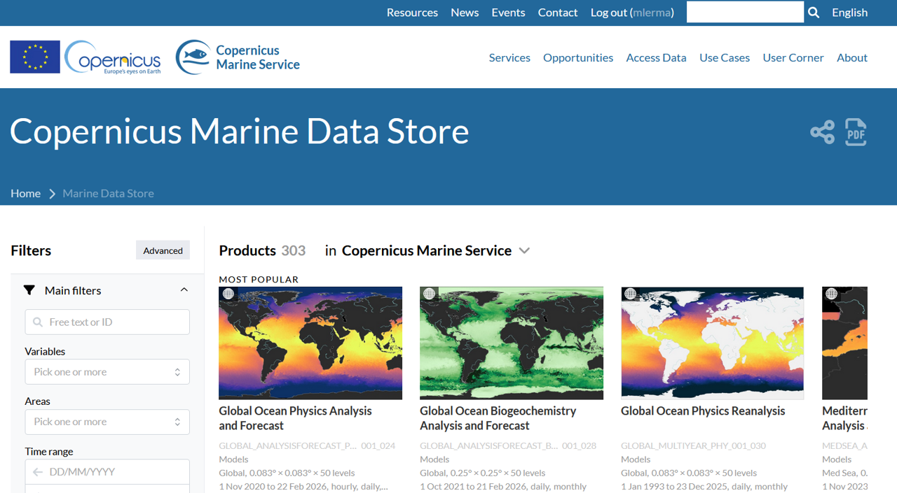
In the Filters panel, narrow down the available datasets by selecting Salinity under the Variables category and Baltic Sea under the Area category. This will refine the results to show only salinity products specifically available for the Baltic Sea region, making it easier to identify and download the most relevant dataset for your analysis.
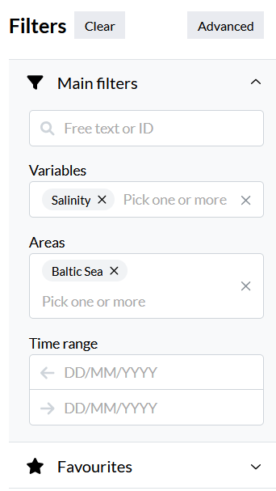
You will find two main options: Baltic Sea Physics Reanalysis (1993–2024) and Baltic Sea Physics Analysis and Forecast (2021–2026). The reanalysis dataset is best for long-term historical studies, while the analysis and forecast product is suited for recent conditions and short-term predictions.
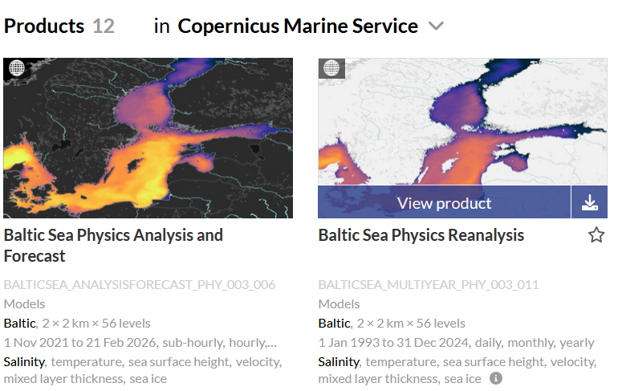
For this tutorial, we will use Baltic Sea Physics Analysis and Forecast, as it provides more detailed and up-to-date data. This product offers higher temporal resolution and near-real-time information, making it particularly suitable for capturing recent salinity patterns and short-term variability in the Baltic Sea.
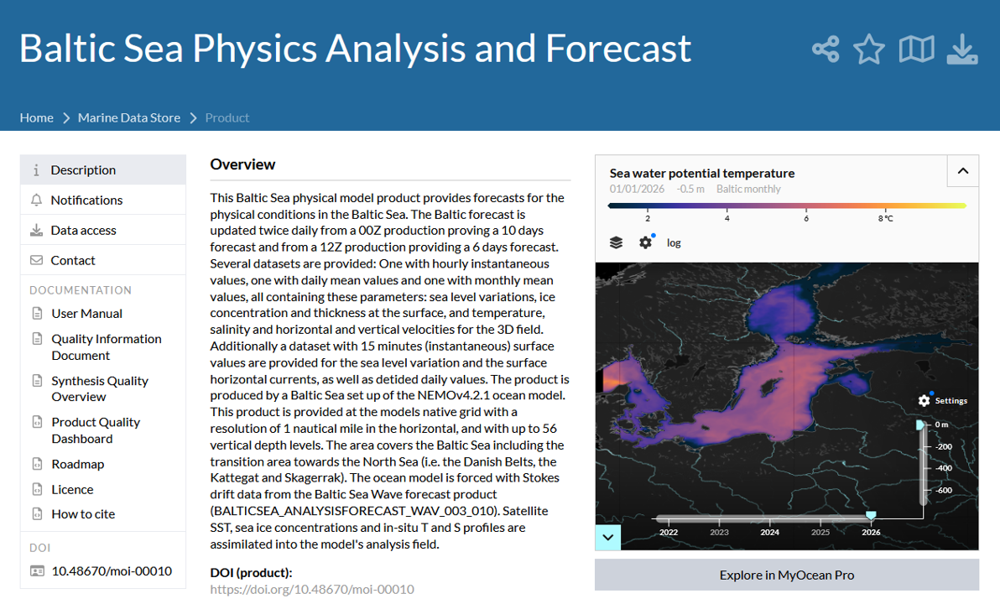
Click on the download icon for the selected dataset. This will open the download options, allowing you to choose the file format, time range, and specific variables you want to retrieve, so you can get the data ready for use in QGIS.
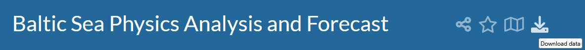
Select Monthly as the temporal resolution and keep only the Salinity variable. This ensures you download a dataset focused solely on salinity, reducing file size and making it easier to work with in QGIS.
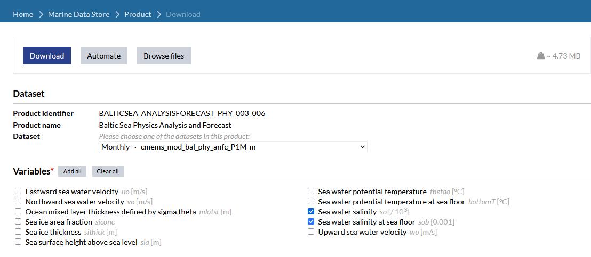
Define your area of interest and, for this example, select only the surface water layer. Focusing on the surface simplifies the dataset and allows you to analyze salinity patterns at the ocean’s top layer.
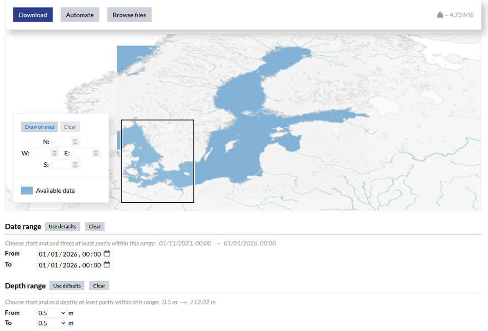
The downloaded file will have a name like BAL-NEMO_PHY-MonthlyMeans-202601, where the “202601” indicates that the data corresponds to January 2026. This naming convention makes it easy to identify the time period covered by each file when working with multiple monthly datasets in QGIS.
QGIS
Drag the downloaded file into QGIS’s Layers panel. A window will appear listing the available variables. Since we are focusing on surface salinity, select SLA (Sea Water Salinity). If you wanted bottom-layer salinity instead, you would choose SOB.
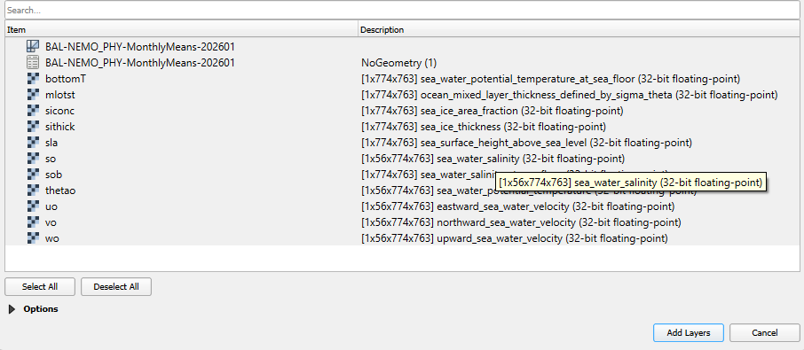
CRS
Assign a Coordinate Reference System (CRS) to the layer. Here, you can use the project CRS, which ensures consistency with your map, but the choice may vary depending on your study area or the CRS of other layers you are using. This step is important for accurate spatial alignment and measurements in QGIS.
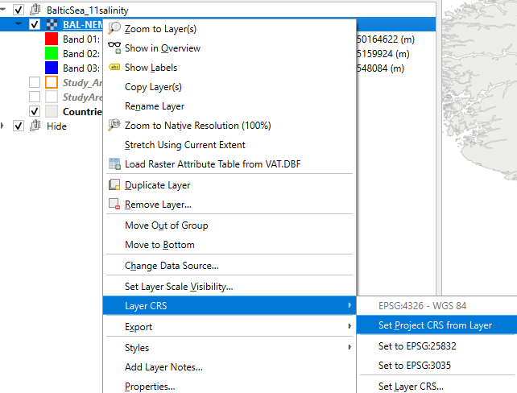
Single Band Pseudocolor
For styling the layer, I took inspiration from this publication: link here
I applied Singleband pseudocolor rendering and chose Band 01, which corresponds to a depth of 0.50 m (surface layer). I set the minimum value to 0 and the maximum to 30, using the Viridis color ramp, and inverted it for better visual contrast.
The Mode was set to Equal Interval with 10 classes, then I manually adjusted the class breaks to multiples of 3 to better reflect meaningful salinity intervals in the Baltic Sea.
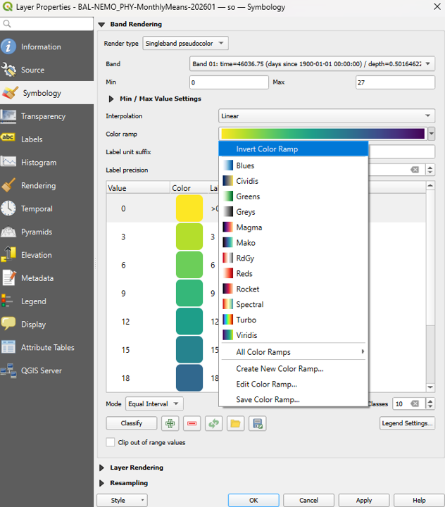
Layout
To export the map, go to Project > Layouts > Open Layout, using one of your previously created layouts that already has the coordinates, symbols, and general map setup.
In the layout, include reference layers such as countries, EEZ, and territorial waters to provide geographic context. Then, add the salinity layer on top.
Make sure to adjust the legend settings for this layer by unchecking “Use continuous legend”, so the discrete classes you defined earlier are properly displayed.
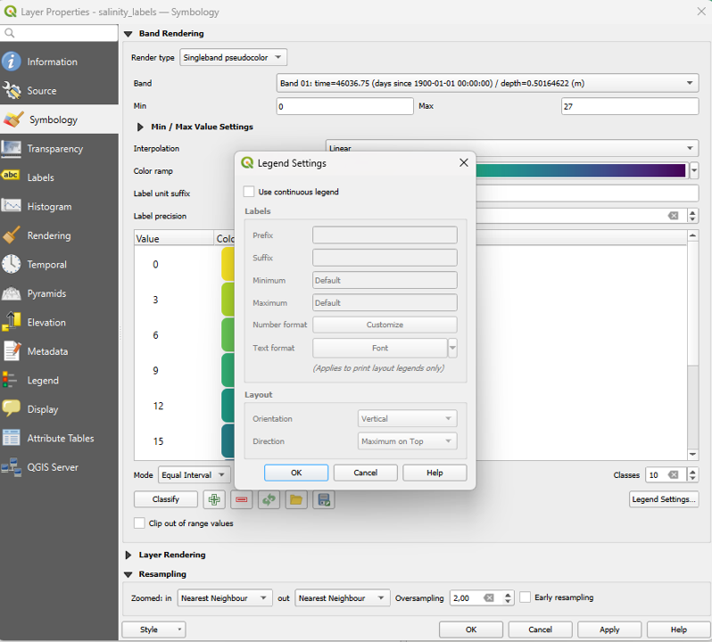
Country and Places names
To create a new shapefile, go to Layer > Create Layer > New Shapefile Layer. Give the layer a descriptive name and set the geometry type to MultiPoint.
Next, click Add to Field List to define the attributes: ID – set the type to Integer. Place – set the type to Text (String) with a length of 80 characters. Country – set the type to Text (String) with a length of 2, using standard country codes like DE, PL, DK. This setup allows you to store multiple points with identifying information and associated country codes for your salinity mapping project.
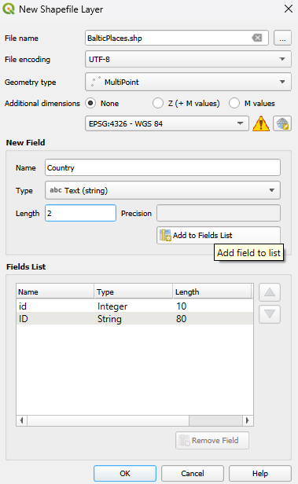
Final
For the final layout, I included the names of key places and labeled the country boundaries with their names. I also added the legend to clearly show the salinity classes.
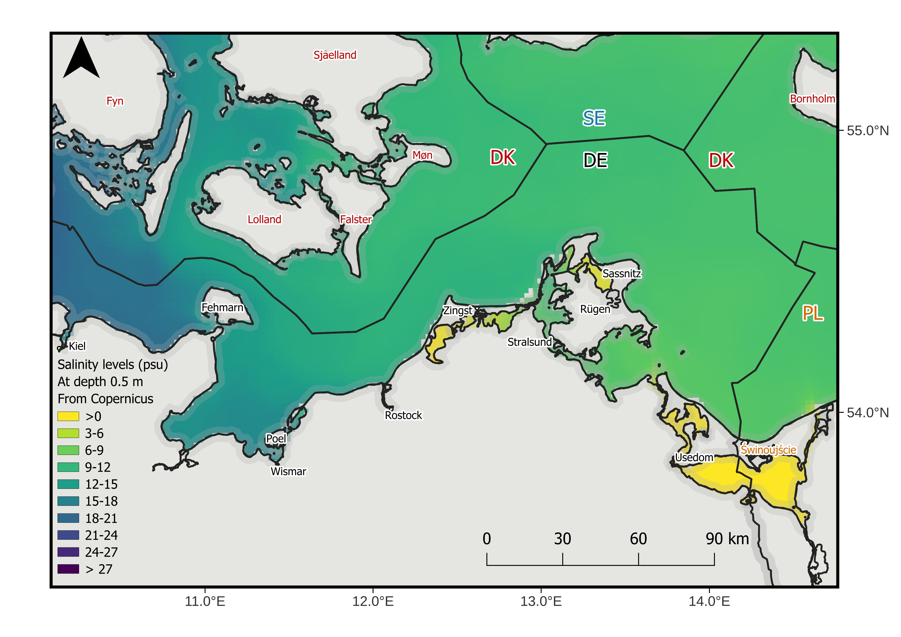
Further reading
I drew inspiration from several scientific publications that visualize salinity gradients and spatial patterns in the Baltic Sea: - Ocean Acidification in the Baltic Sea: Involved Processes, Metrology of pH in Brackish Waters and Calcification under Fluctuating Conditions – which provides excellent examples of oceanographic color ramps and layout ideas.
- Dwarfism of blue mussels in the low saline Baltic Sea – Growth to the lower salinity limit. – showing how salinity structures biological responses across the basin.
- Reciprocal transplants support a plasticity‑first scenario during colonisation of a large hyposaline basin by a marine macroalga. – another work with informative spatial figures.
For the dataset we used in this project, check the Copernicus Marine data portal